Amendment #301 (S.O. 1101(E), 2012)
4 changes: 1 to the First Schedule, 3 to the Second Schedule. 4 applied
What it did to the ministries
- grewMinistry of Social Justice and Empowerment grows from 37 to 49 subjects change 1, 4 · histories: Social Justice
The order, page by page
Page 1 of 11
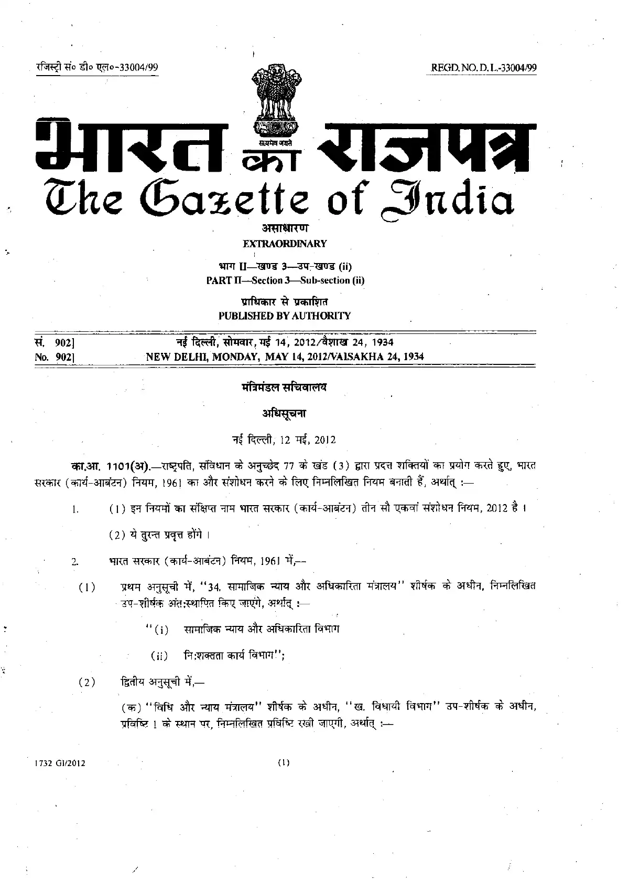
Page 2 of 11
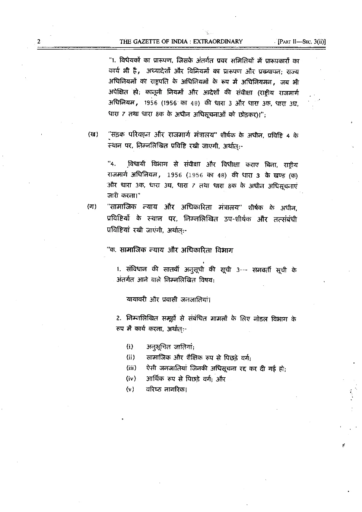
Page 3 of 11
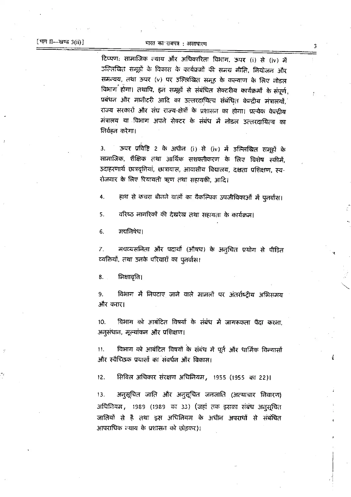
Page 4 of 11
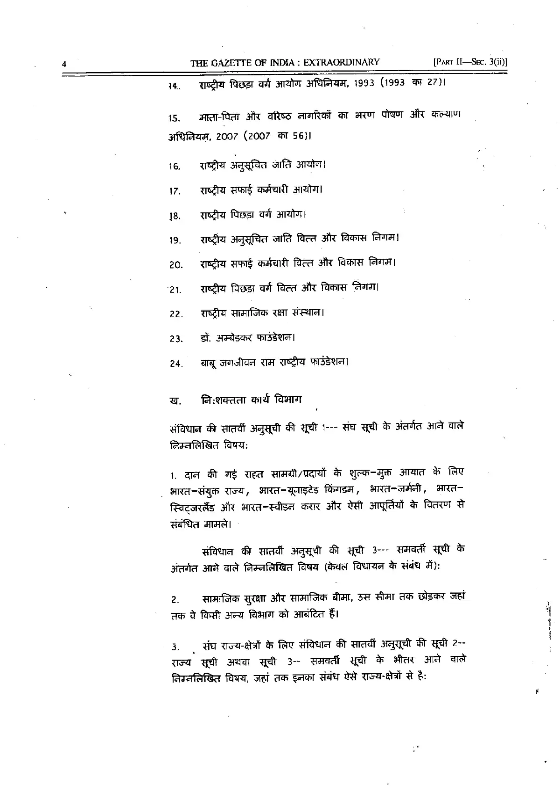
Page 5 of 11
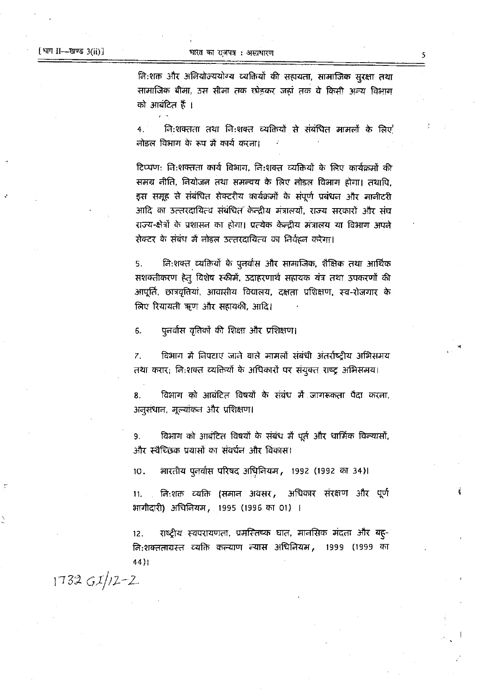
Page 6 of 11
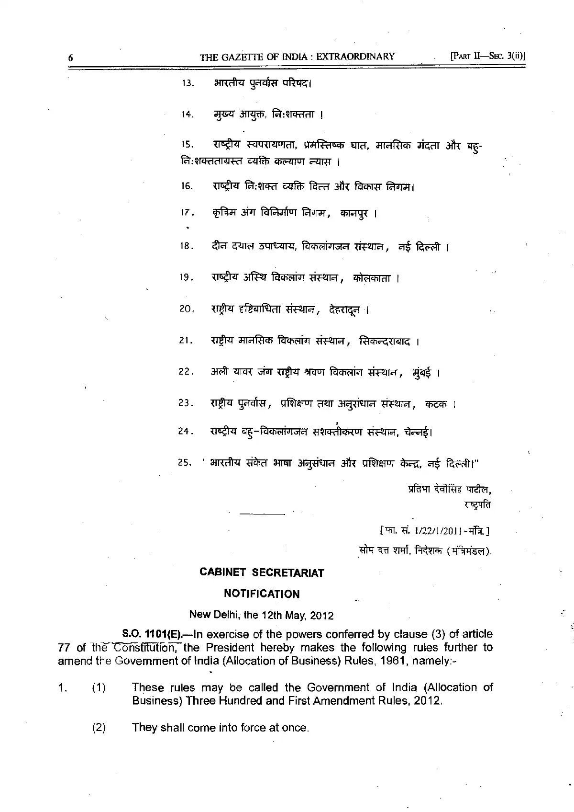
Page 7 of 11
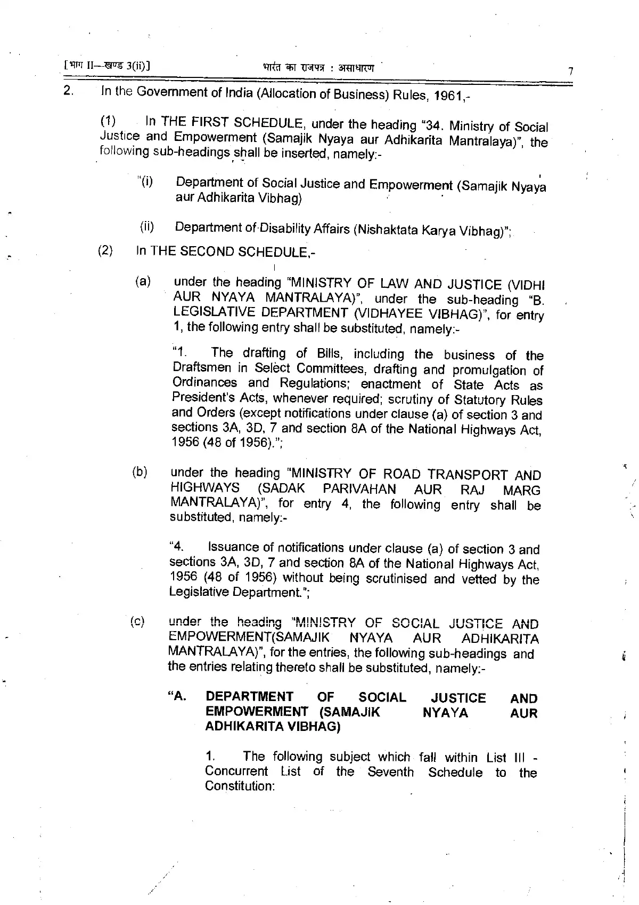
1234after Schedule 1 › Ministry of Social Justice and Empowerment
- i. Department of Social Justice and Empowerment
- ii. Department of Disability Affairs
applied at schedule 1 › ministry 35 in the Rules after #301
Schedule 2 › MINISTRY OF LAW AND JUSTICE › LEGISLATIVE DEPARTMENT › entry 1
- 1. The drafting of Bills, including the business of the Draftsmen in Select Committees, drafting and promulgation of Ordinances and Regulations; enactment of State Acts as President's Acts, whenever required; scrutiny of Statutory Rules and Orders (except notifications under clause (a) of section 3…
applied at schedule 2 › ministry MINISTRY OF LAW AND JUSTICE › department B › entry 1 in the Rules after #301
new hindi differs
Schedule 2 › MINISTRY OF ROAD TRANSPORT AND HIGHWAYS › entry 4
- 4. Issuance of notifications under clause (a) of section 3 and sections 3A, 3D, 7 and section 8A of the National Highways Act 1956 (48 of 1956) without being scrutinised and vetted by the Legislative Department.
applied at schedule 2 › ministry MINISTRY OF ROAD TRANSPORT AND HIGHWAYS › group_heading I › entry 4 in the Rules after #301
new hindi differs
Schedule 2 › MINISTRY OF SOCIAL JUSTICE AND EMPOWERMENT
- A. DEPARTMENT OF SOCIAL JUSTICE AND EMPOWERMENT
- 1. The following subject which fall within List III Concurrent List of the Seventh Schedule to the Constitution: Nomadic and Migratory Tribes.
- 2. To act ' as the nodal Department for matters pertaining to the following groups, namely:-
- i. Scheduled Castes 98 Socially and Educationally Backward
- ii. Classes Denotified Tribes Economically Backward Classes; and 333 Senior Citizens.
- Note: The Department of Social Justice and Empowerment shall be the nodal Department for the overall policy, planning and coordination of programmes for the development of the groups mentioned at (i) to (iv) above, and the welfare of the group at (v) above. However, overall management and…
and 50 more
- 3. Special schemes aimed at social, educational and economic empowerment of the groups mentioned at (i) to
- iv. under entry 2 above, e.g. scholarships, hostels residential schools, skill training, concessional loans and subsidy for self-employment, etc.
- 4. Rehabilitation of Manual Scavengers in alternative occupations.
- 5. Programmes of care and support to senior citizens.
- 6. Prohibition.
- 7. Rehabilitation of victims of alcoholism and substance abuse, and their families.
- 8. Beggary.
- 9. International Conventions and Agreements on matters dealt within the Department.
- 10. Awareness generation, research, evaluation and training in regard to subjects allocated to the Department. r
- 11. Charitable and Religious Endowments and promotion and development of Voluntary Effort pertaining to subjects allocated to the Department.
- 12. The Protection of Civil Rights Act, 1955 (22 of 1955).
- 13. The Scheduled Castes and the Scheduled Tribes (Prevention of Atrocities) Act, 1989 (33 of 1989), (in so far as it relates to the Scheduled Castes, excluding administration of criminal justice in regard to offences under the Act).
- 14. The National Commission for Backward Classes Act, 1993 (27 of 1993).
- 15. The Maintenance and Welfare of Parents and Senior Citizens Act, 2007 (56 of 2007).
- 16. The National Commission for the Scheduled Castes.
- 17. The National Commission for Safai Karmacharis.
- 18. The National Commission for Backward Classes.
- 19. The National Scheduled Castes Finance and Development Corporation.
- 20. The National Safai Karamcharis Finance and Development Corporation.
- 21. The National Backward Classes Finance and Development Corporation.
- 22. National Institute of Social Defence.
- 23. Dr. Ambedkar Foundation.
- 24. Babu Jagjivan Ram National Foundation.
- B. DEPARTMENT OF DISABILITY AFFAIRS The following subjects which fall within List 1 - Union List of the Seventh Schedule to the Constitution:
- 1. Indo-US, Indo-UK, Indo-German, Indo-Swiss and Indo-Swedish Agreements for Duty-free import of donated relief goods/supplies and matters connected with the distribution of such supplies. The following subjects which fall within List III - Concurrent List of the Seventh Schedule to the 113261/12-3…
- 2. Social Security and Social Insurance, save to the extent allotted to any other Department.
- 3. For the Union territories, the following subjects which fall in List II -State List or List III - Concurrent List of the Seventh Schedule to the Constitution, in so far as they exist in regard to such territories: Relief of the Disabled and the unemployable; Social Security and Social Insurance,…
- 4. To act as the nodal Department for matters pertaining to Disability and Persons with Disabilities.
- Note: The Department of Disability Affairs shall be the nodal Department for the overall policy, planning and coordination of programmes for Persons with Disabilities. However, overall management and monitoring etc. of the sectoral programmes in respect of this group shall be the responsibility of…
- 5. Special schemes aimed at rehabilitation and social educational and economic empowerment of Persons with Disabilities, e.g. supply of aids and appliances scholarships, residential schools, skill training concessional loans and subsidy for self-employment, etc.
- 6. Education and Training of Rehabilitation Professionals.
- 7. International Conventions and Agreements on matters dealt with in the Department; The United Nation Convention on the Rights of Persons with Disabilities.
- 8. Awareness generation, research, evaluation and training in regard to subjects allocated to the Department.
- 9. Charitable and Religious Endowments, and promotion and development of Voluntary Effort pertaining to subjects allocated to the Department.
- 10. The Rehabilitation Council of India Act, 1992 (34 of 1992).
- 11. The Persons with Disabilities (Equal Opportunities Protection of Rights and Full Participation) Act, 1995 (1 of 1996). 11
- 12. The National Trust for Welfare of Persons with Autism, Cerebral Palsy, Mental Retardation and Multiple Disabilities Act, 1999 (44 of 1999).
- 13. The Rehabilitation Council of India.
- 14. The Chief Commissioner for Persons with i Disabilities.
- 15. The National Trust for the Welfare of Persons with Autism, Cerebral Palsy, Mental Retardation and Multiple Disabilities.
- 16. The National Handicapped Finance and Development Corporation.
- 17. Artificial Limbs Manufacturing Corporation, Kanpur.
- 18. Deen Dayal Upadhyaya Institute of Physically Handicapped, New Delhi.
- 19. National Institute for the Orthopaedically Handicapped, Kolkata.
- 20. National Institute of Visually Handicapped Dehradun.
- 21. National Institute of Mentally Handicapped Secunderabad.
- 22. Ali Yavar Jung National Institute for the Hearing Handicapped, Mumbai.
- 23. National Institute of Rehabilitation Training and Research, Cuttack.
- 24. National Institute for the Empowerment of Persons with Multiple Disabilities, Chennai.
- 25. The Indian Sign Language Research and Training Centre, New Delhi.
applied at schedule 2 › ministry MINISTRY OF SOCIAL JUSTICE AND EMPOWERMENT in the Rules after #301
read page break
Page 8 of 11
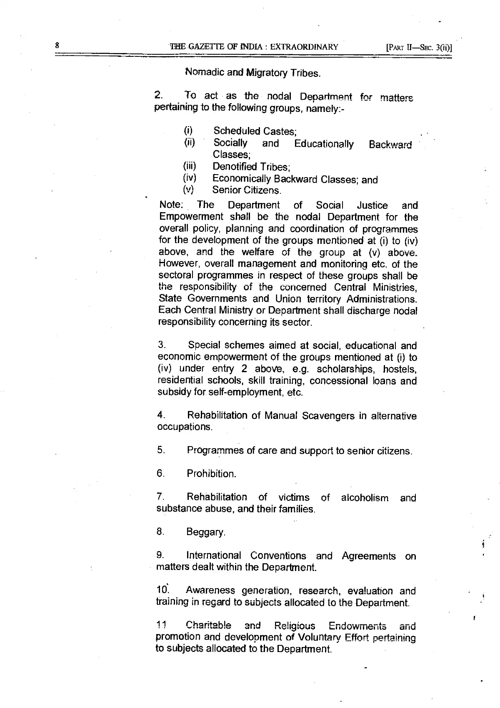
Page 9 of 11
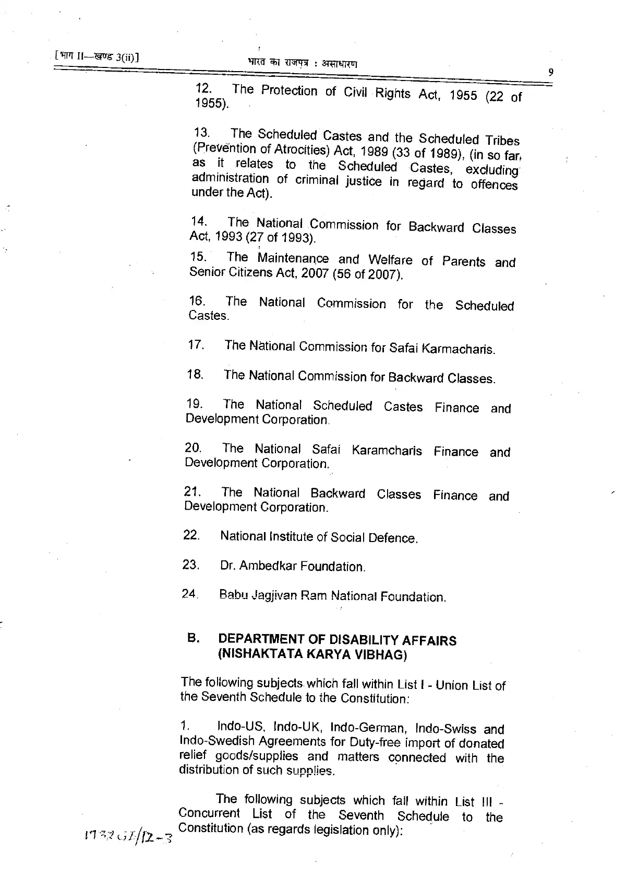
Page 10 of 11
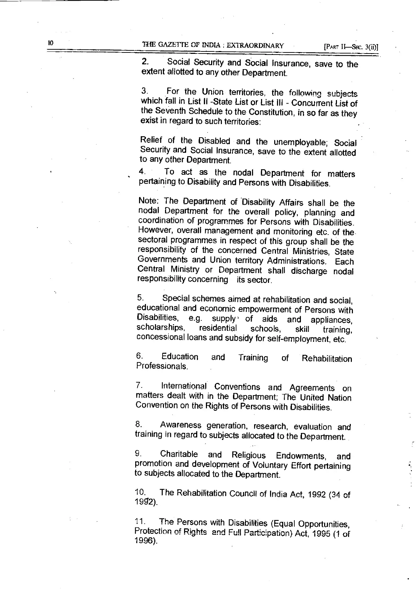
Page 11 of 11
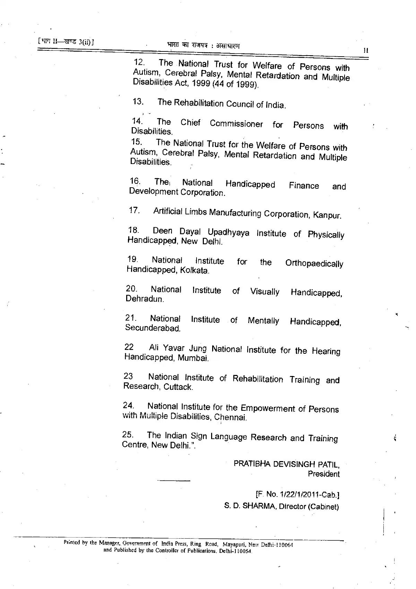
How this document was read
From the Government of India (Allocation of Business) Rules, 1961 and their amendments, as published by the Cabinet Secretariat (cabsec.gov.in), read by orgpedia. The readings of the older scanned gazettes have known gaps.